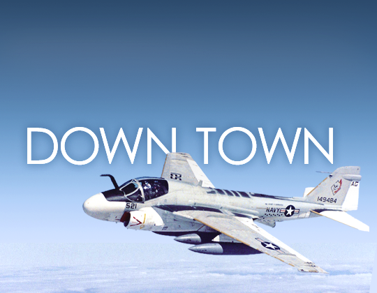

Original Concept By: Paul Bridge
Date: December 1st 1967
Location: Gulf of Tonkin, North Vietnam
Playable Side: USN
Duration: 1 Day
The Vietnam War began in November 1955, with US ground combat units deploying in 1965. The conflict escalated steadily, and following an attack on the U.S. Marine barracks at Pleiku in March 1965, the U.S. commenced Operation Flaming Dart, Operation Rolling Thunder and Operation Arc Light. These bombing campaigns would eventually last three years and expend more than a million tons of ordnance.
Navy strikes against North Vietnam were launched from the aircraft carriers of Task Force 77 stationed in the Gulf of Tonkin at Yankee Station. Although its official designation was Point Yankee, it was universally referred to as Yankee Station, located about 190 km due east of Dong Hoi, at 17° 30' N and 108° 30' E.
The first missions flown from Yankee Station were reconnaissance missions over Laos conducted in 1964. During the two periods of sustained air strikes against North Vietnam, from March 1965 to October 1968 and from March 1972 to December 1972 there were usually three carriers on the line. The carriers conducted air operations for twelve hours on and twelve hours off to give 24-hour coverage, with two carriers operating during daylight hours and one carrier operating at night.
A carrier would remain on the line for 30 to 35 days, and then have a recreation period for 6 to 8 days. A carrier deployment to the Western Pacific usually involved six periods on the line, launching 9000 to 13000 sorties, and lasting about 10 1/2 months. On rare occasions four carriers operated on Yankee Station, and for a short period of time during the Linebacker strikes at the end of May 1972, six carriers were on the line at Yankee station.
This scenario takes place in 1967 during Operation Rolling Thunder. You are put in command of the USS Ranger Strike Group, about to launch an early morning strike on North Vietnamese targets.